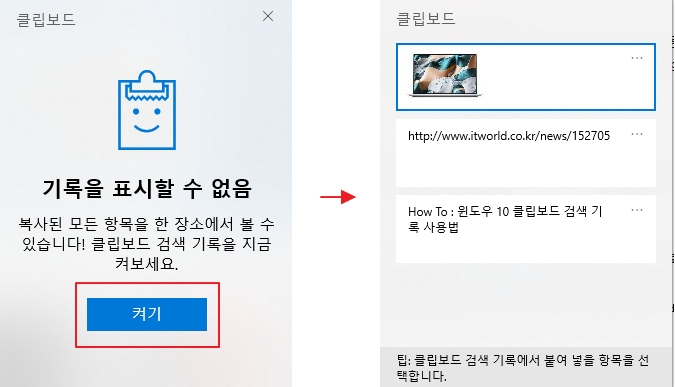

휴대폰에만 있는줄 알았던 클립보드 기능은 사실 윈도우에도 있다. 클립보드는 내가 복사해둔 여러가지를 꺼내 사용하는데 용이하다. 특히 2-1 스크린캡쳐 기능과 같이 사용하면 여러 화면을 캡쳐 후 붙여 ppt를 제작하는 과정을 굉장히 줄일 수 있다. 단축키는 Win+V 이다.
처음 클립보드를 열 경우 이 기능을 켜야한다. 기능을 설정한 후, 다양한 것들을 복사해보자.
